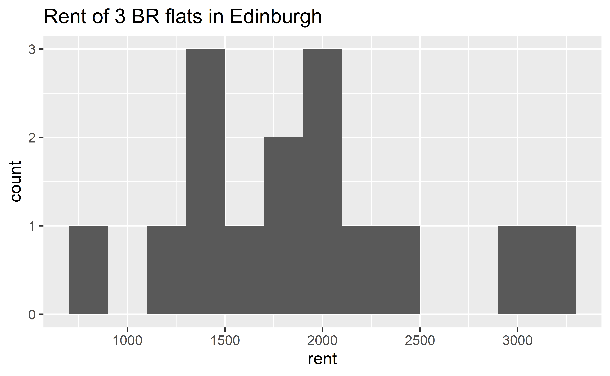
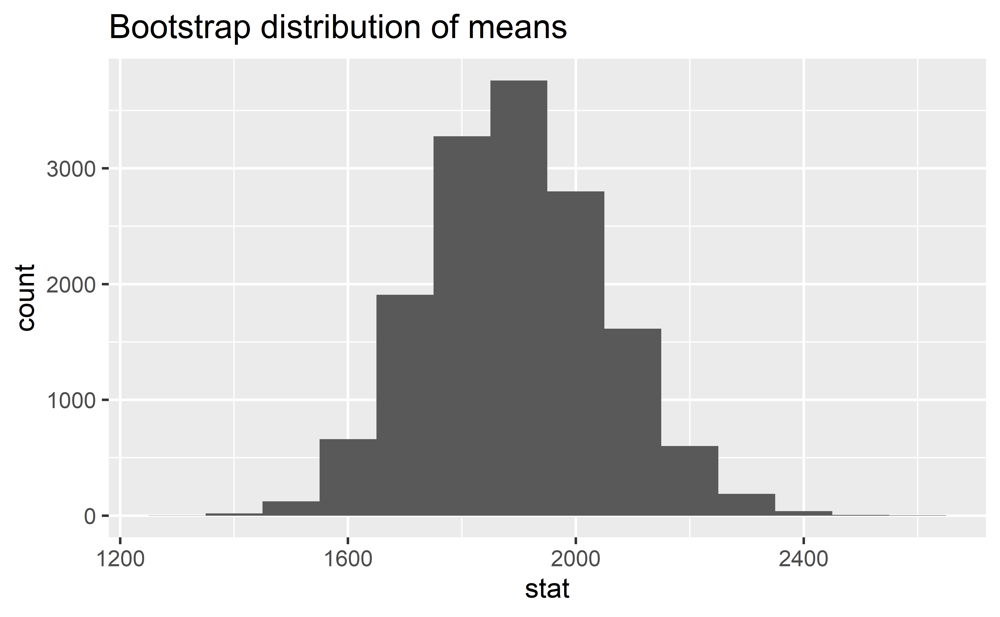
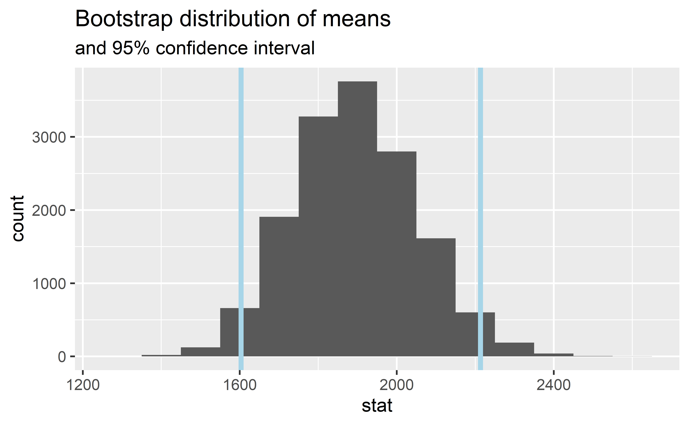
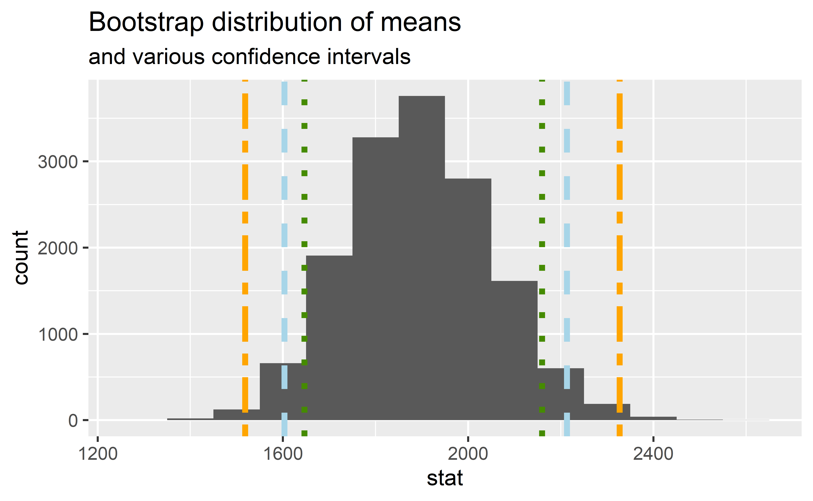

Bootstrapping
Data Science in a Box
layout: true
class: middle
Rent in Edinburgh
Rent in Edinburgh
.question[ Take a guess! How much does a typical 3 BR flat in Edinburgh rents for?]
Sample
Fifteen 3 BR flats in Edinburgh were randomly selected on rightmove.co.uk.
library(tidyverse)
edi_3br <- read_csv2("data/edi-3br.csv") # ; separated.small[]
Observed sample

Observed sample
Sample mean ≈ £1895 😱

Bootstrap population
Generated assuming there are more flats like the ones in the observed sample… Population mean = ❓

Bootstrapping scheme
- Take a bootstrap sample - a random sample taken with replacement from the original sample, of the same size as the original sample
- Calculate the bootstrap statistic - a statistic such as mean, median, proportion, slope, etc. computed on the bootstrap samples
- Repeat steps (1) and (2) many times to create a bootstrap distribution - a distribution of bootstrap statistics
- Calculate the bounds of the XX% confidence interval as the middle XX% of the bootstrap distribution
class: middle
Bootstrapping with tidymodels
Generate bootstrap means
edi_3br %>%
# specify the variable of interest
specify(response = rent)Generate bootstrap means
edi_3br %>%
# specify the variable of interest
specify(response = rent)
# generate 15000 bootstrap samples
generate(reps = 15000, type = "bootstrap")Generate bootstrap means
edi_3br %>%
# specify the variable of interest
specify(response = rent)
# generate 15000 bootstrap samples
generate(reps = 15000, type = "bootstrap")
# calculate the mean of each bootstrap sample
calculate(stat = "mean")Generate bootstrap means
# save resulting bootstrap distribution
boot_df <- edi_3br %>%
# specify the variable of interest
specify(response = rent) %>%
# generate 15000 bootstrap samples
generate(reps = 15000, type = "bootstrap") %>%
# calculate the mean of each bootstrap sample
calculate(stat = "mean")The bootstrap sample
.question[ How many observations are there in boot_df? What does each observation represent?]
boot_dfResponse: rent (numeric)
# A tibble: 15,000 x 2
replicate stat
<int> <dbl>
1 1 1793.
2 2 1938.
3 3 2175
4 4 2159.
5 5 2084
6 6 1761
# ... with 14,994 more rowsVisualize the bootstrap distribution
ggplot(data = boot_df, mapping = aes(x = stat)) +
geom_histogram(binwidth = 100) +
labs(title = "Bootstrap distribution of means")
Calculate the confidence interval
A 95% confidence interval is bounded by the middle 95% of the bootstrap distribution.
boot_df %>%
summarize(lower = quantile(stat, 0.025),
upper = quantile(stat, 0.975))# A tibble: 1 x 2
lower upper
<dbl> <dbl>
1 1603. 2213.Visualize the confidence interval

Interpret the confidence interval
.question[ The 95% confidence interval for the mean rent of three bedroom flats in Edinburgh was calculated as (1603, 2213). Which of the following is the correct interpretation of this interval?]
class: middle
Accuracy vs. precision
Confidence level
We are 95% confident that …
- Suppose we took many samples from the original population and built a 95% confidence interval based on each sample.
- Then about 95% of those intervals would contain the true population parameter.
Commonly used confidence levels
.question[ Which line (orange dash/dot, blue dash, green dot) represents which confidence level?]

Precision vs. accuracy
.question[ If we want to be very certain that we capture the population parameter, should we use a wider or a narrower interval? What drawbacks are associated with using a wider interval?]
–

–
.question[ How can we get best of both worlds – high precision and high accuracy?]
Changing confidence level
.question[ How would you modify the following code to calculate a 90% confidence interval? How would you modify it for a 99% confidence interval?]
edi_3br %>%
specify(response = rent) %>%
generate(reps = 15000, type = "bootstrap") %>%
calculate(stat = "mean") %>%
summarize(lower = quantile(stat, 0.025),
upper = quantile(stat, 0.975))Recap
- Sample statistic \(\ne\) population parameter, but if the sample is good, it can be a good estimate
- We report the estimate with a confidence interval, and the width of this interval depends on the variability of sample statistics from different samples from the population
- Since we can’t continue sampling from the population, we bootstrap from the one sample we have to estimate sampling variability
- We can do this for any sample statistic:
- For a mean:
calculate(stat = "mean") - For a median:
calculate(stat = "median") - Learn about calculating bootstrap intervals for other statistics in your homework
- For a mean: